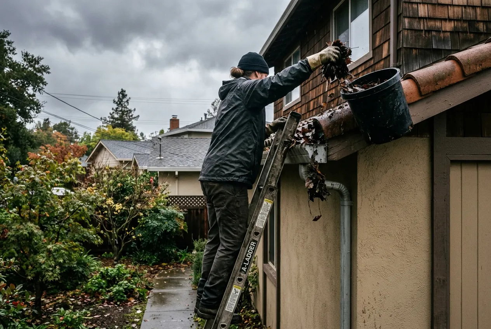

In short
- Atmospheric rivers are ranked AR 1 (weak) to AR 5 (exceptional). AR 3 and above are when we see the most water damage calls.
- The Bay Area averages about one AR 4 storm every three years.
- Clear gutters, downspouts and storm drains 48 hours out. Most storm leaks start at blocked drainage.
- Test your sump pump and plan for power outages. Storms and outages tend to arrive together.
Most of the year, East Bay homes see very little rain. Then an atmospheric river parks itself over the coast and drops days of it on hillsides, clogged gutters and old drainage. The good news is that most storm water damage starts at the same few weak points, and almost all of them can be fixed in an afternoon before the storm arrives.
What the AR scale means for your home
Atmospheric rivers are long, narrow bands of water vapor that carry tropical moisture to the West Coast. In 2019, researchers at Scripps Institution of Oceanography's Center for Western Weather and Water Extremes (CW3E) published a five-step scale to describe how strong and how hazardous they are:
| Category | Strength | What it usually means |
|---|---|---|
| AR 1 | Weak | Primarily beneficial rain |
| AR 2 | Moderate | Mostly beneficial, somewhat hazardous |
| AR 3 | Strong | A balance of beneficial and hazardous |
| AR 4 | Extreme | Mostly hazardous; rivers can reach flood stage |
| AR 5 | Exceptional | Primarily hazardous |
The scale considers both how much water vapor the storm carries and how long it lasts. According to the scale's authors, the San Francisco Bay Area averages about one AR 4 storm every three years. Forecasters and CW3E publish AR scale forecasts days ahead, which gives you time to prepare.
When you hear an AR 3 or stronger is coming, use the checklist below.
48 hours out: drainage
Blocked drainage is behind most of the storm damage we see. Water that can't get off the roof and away from the house finds another way in.
- Clean gutters and downspouts. Leaves and debris back water up under roof edges and into soffits and walls.
- Point downspouts away from the foundation, at least a few feet, with extensions or splash blocks.
- Clear storm drains and yard drains near your property, including the curb drain on your street if it is safe to reach.
- Check exterior drains at the bottom of driveways, stairwells and patios.
- Walk the roof line from the ground and look for missing shingles, lifted flashing or damaged vents.

Illustrative24 hours out: protect the low points
- Sandbags at garage doors, low entry doors and basement or crawlspace openings. Many East Bay cities and county agencies offer free sandbags in storm season; pick them up early.
- Lift what's on the floor in garages, basements and crawlspace-level storage: boxes, documents, tools and anything you can't easily replace.
- Hillside homes: check that slope drains and swales aren't blocked, and watch for new cracks or soil movement above the house.
Power outages and sump pumps
Big storms and power outages tend to arrive together. If your home relies on a sump pump:
- Test it. Pour water into the pit and make sure it switches on and drains.
- Have a backup. A battery backup pump or a generator plan keeps the basement dry when the power is out.
- Charge phones and flashlights, and know where your main water shutoff and electrical panel are.
Before the storm: photograph your home
Take ten minutes to walk your home and photograph each room, the roof line, the exterior walls and the basement or crawlspace. If something goes wrong, "before" photos make it far easier to show your insurer what changed.
During the storm
- Stay off ladders and the roof. No gutter is worth a fall in the rain.
- Watch the usual suspects: ceilings under the roof valleys, around skylights and windows, and the garage floor.
- Contain small leaks with buckets and towels, and move belongings away from them.
- If water is near outlets or the panel, keep away and turn off power at the breaker only if you can do so from a dry spot.
After the storm: what to check
- Look for ceiling stains, bubbling paint and damp baseboards, especially on exterior walls.
- Smell for mustiness in closets and crawlspaces over the next few days.
- Check the attic with a flashlight for wet insulation or drips.
Water that got into walls during a storm usually doesn't show up right away. If you see signs of it, don't wait for mold. Wet materials need to start drying within 24 to 48 hours.
When to call us
We dispatch through storms, and we put active water intrusion first. That includes roof and window leaks, flooded garages and crawlspaces, and emergency tarping. If water is coming in, request dispatch. If it already happened, our first-hour guide covers what to do while you wait.
Frequently asked questions
What is an atmospheric river?
A long, narrow band of water vapor carried by strong winds from the tropics. When one stalls over the coast, it can drop days of heavy rain. Researchers at Scripps Institution of Oceanography rank them from AR 1 (weak, mostly beneficial) to AR 5 (exceptional, primarily hazardous).
Where can I get sandbags in the East Bay?
Many cities and county public works and fire departments offer free sandbags and sand before and during storm season. Check your city's website or emergency alerts, and pick them up before the storm, not during it.
Does homeowners insurance cover storm water damage?
It depends on how the water got in. Damage from wind-driven rain through a roof opening caused by the storm is commonly covered. Rising surface water or flooding usually isn't, and requires separate flood insurance. Check your policy before the season starts.
What should I do if water gets in during the storm?
Stay safe first. Keep away from outlets and electrical panels if water is near them. Move valuables up, contain what you can, photograph everything, and call for help. We dispatch during storms and prioritize active water intrusion.
Sources
- USGS - New Scale to Characterize Strength and Impacts of Atmospheric River Storms
- CW3E (Scripps) - Atmospheric River Scale Forecasts
- CW3E - New forecast tools for the Atmospheric River Scale
This article is general information, not legal, insurance or medical advice. Images are illustrative.